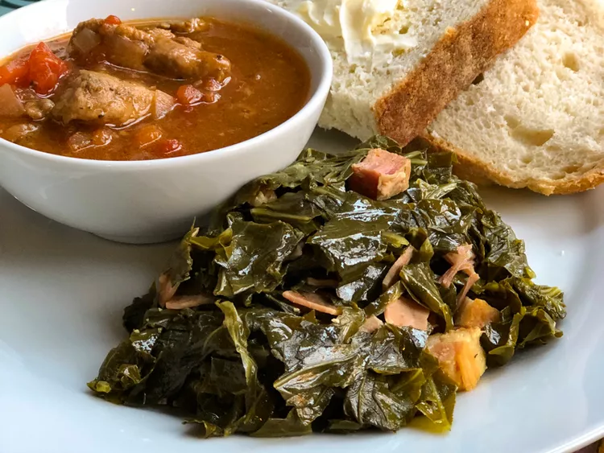

Coles verdes instantáneas

Descripcion
Col rizada rápida al estilo sureño hecha en tu Instant Pot.
Ingredientes
- 1 manojo de col rizada
- 4 rebanadas gruesas de tocino, cortadas en trozos de 1 pulgada
- 4 tazas de agua
- 2 cucharadas de vinagre blanco
- 4 tazas de caldo de pollo
- sal al gusto
Pasos
- Enjuague las hojas de col; retire y deseche las partes gruesas de los tallos. Pica las verduras al tamaño deseado.
- Encienda una olla a presión multifuncional (como Instant Pot) y seleccione la función Saltear. Cocine el tocino hasta que esté dorado y crujiente, aproximadamente 5 minutos. Apague la función Saltear. Vierta agua y vinagre. Raspe el fondo de la olla para soltar los trozos de tocino pegados. Agregue las hojas de col y revuelva para cubrir. Vierta el caldo de pollo y sazone con sal. Cierre y bloquee la tapa.
- Seleccione alta presión según las instrucciones del fabricante; configure el temporizador durante 5 minutos. Espere de 10 a 15 minutos para que se acumule presión.
- Libere la presión utilizando el método de liberación natural según las instrucciones del fabricante durante 20 minutos. Libere rápidamente el vapor restante, según las instrucciones del fabricante, aproximadamente 5 minutos. Desbloquee y retire la tapa. Sazone con más sal si es necesario.